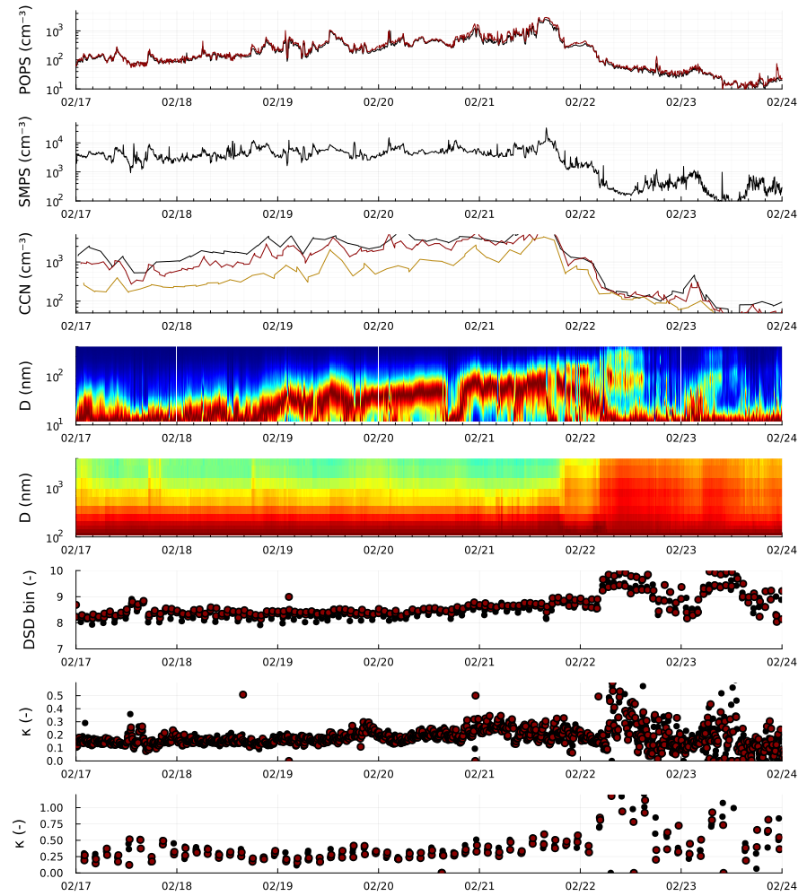
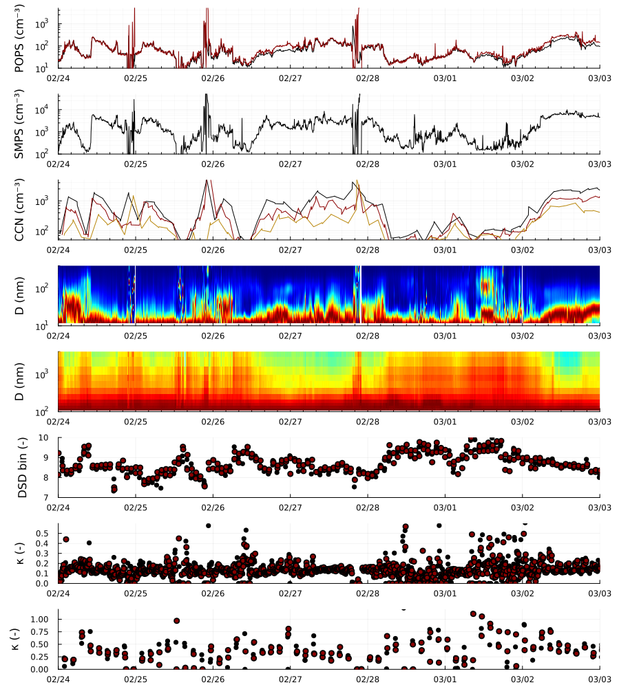
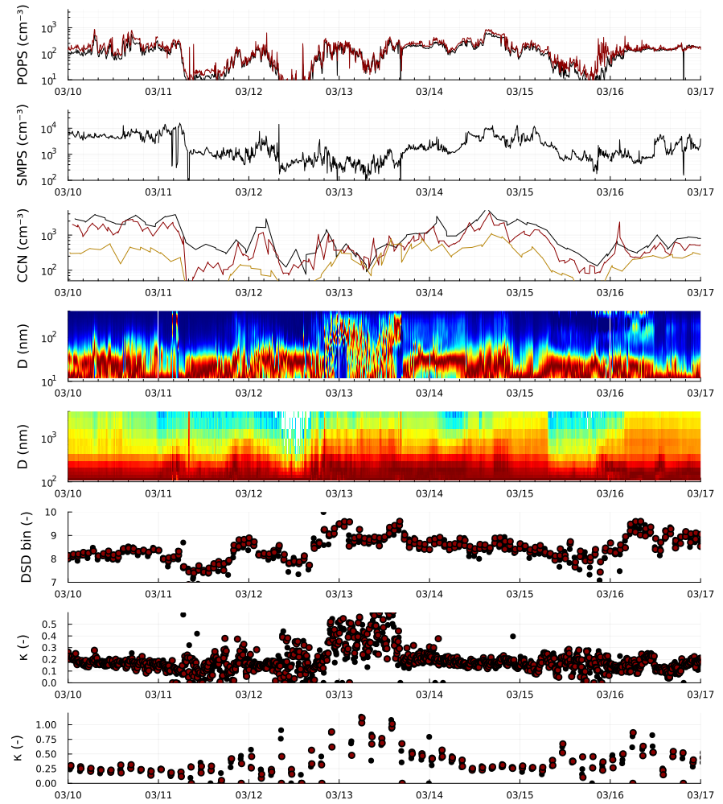
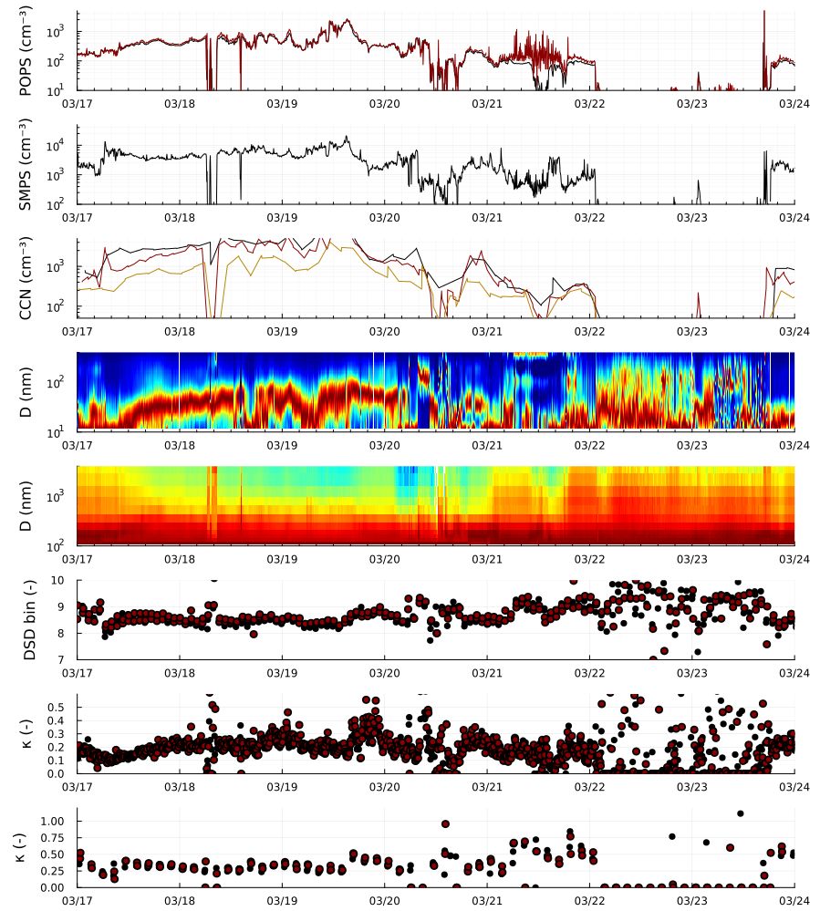
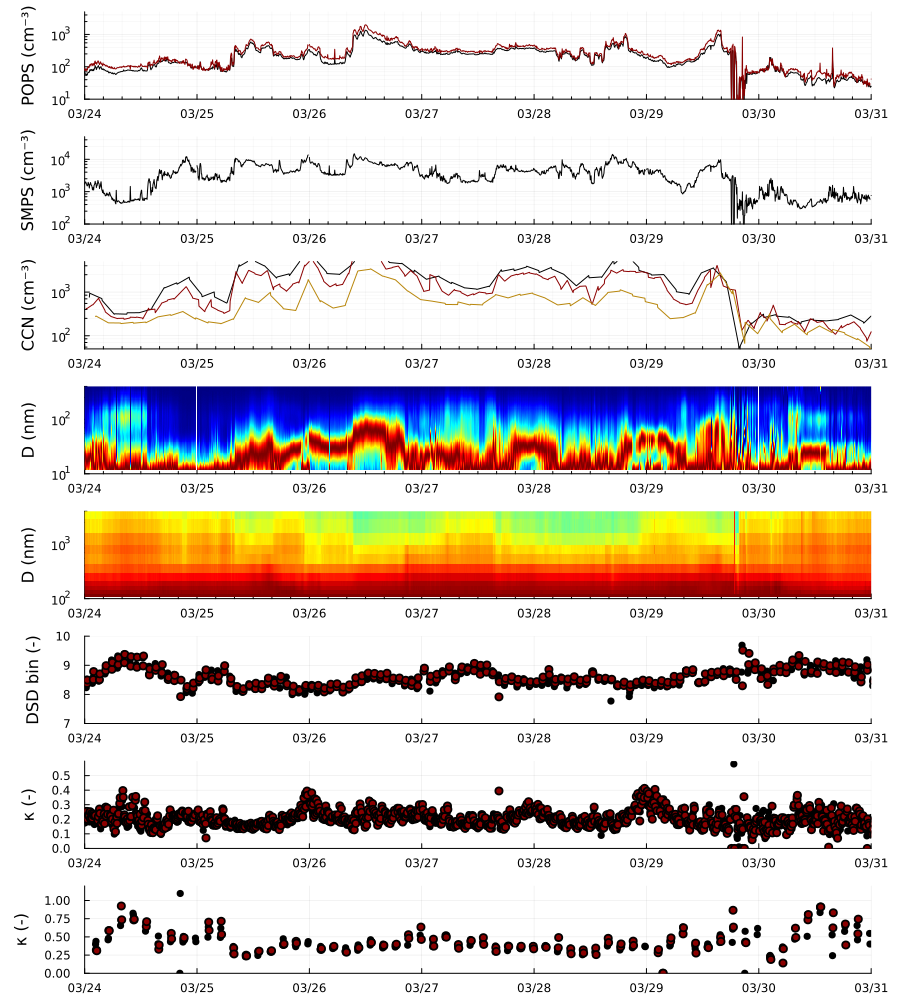
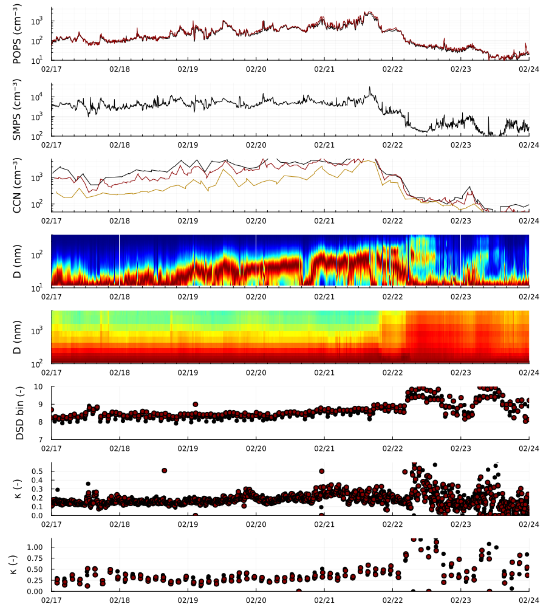
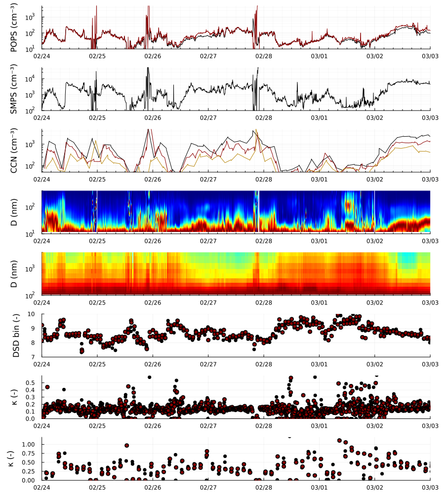
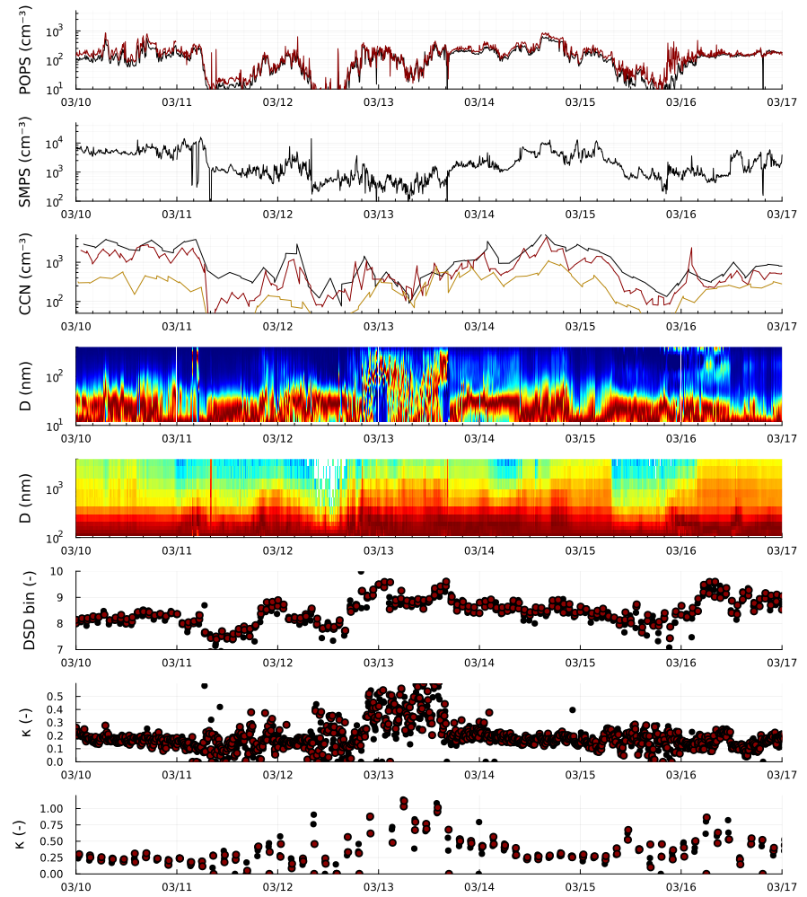
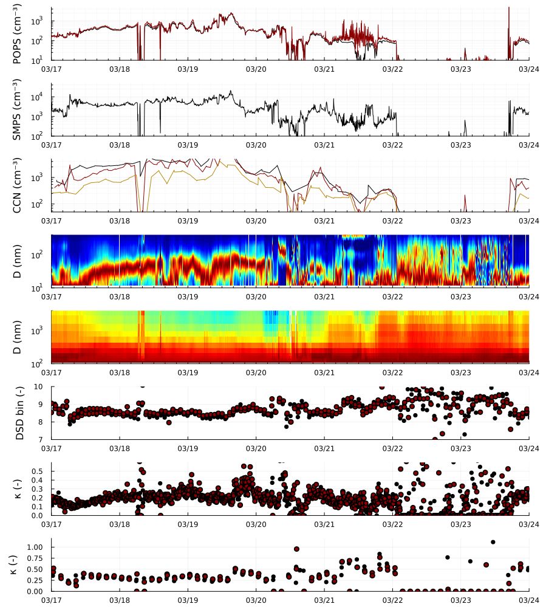
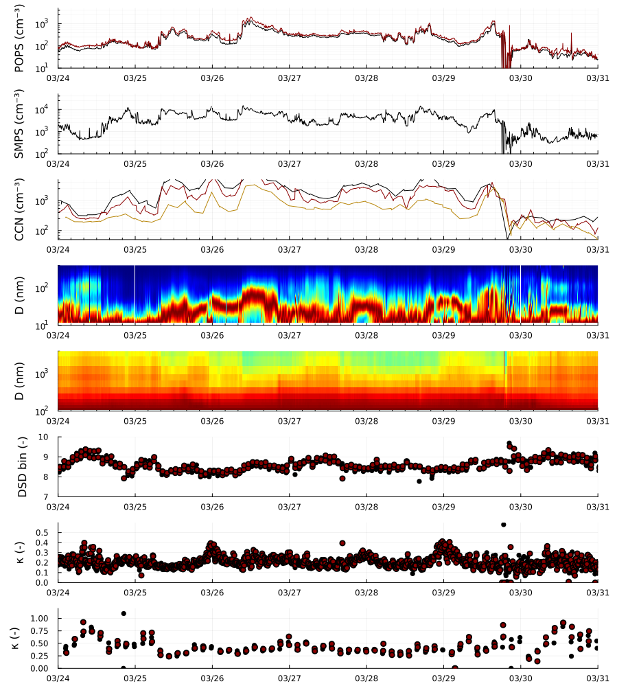

02/10 - 02/17

02/17 - 02/24

02/24 - 03/03

03/03 - 03/10

03/10 - 03/17

03/17 - 03/24

03/24 - 03/31






Settings
This document was generated with Documenter.jl version 0.27.24 on Thursday 23 March 2023. Using Julia version 1.8.5.